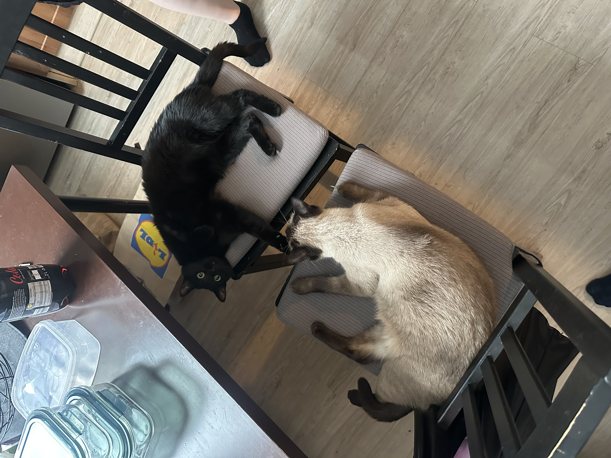
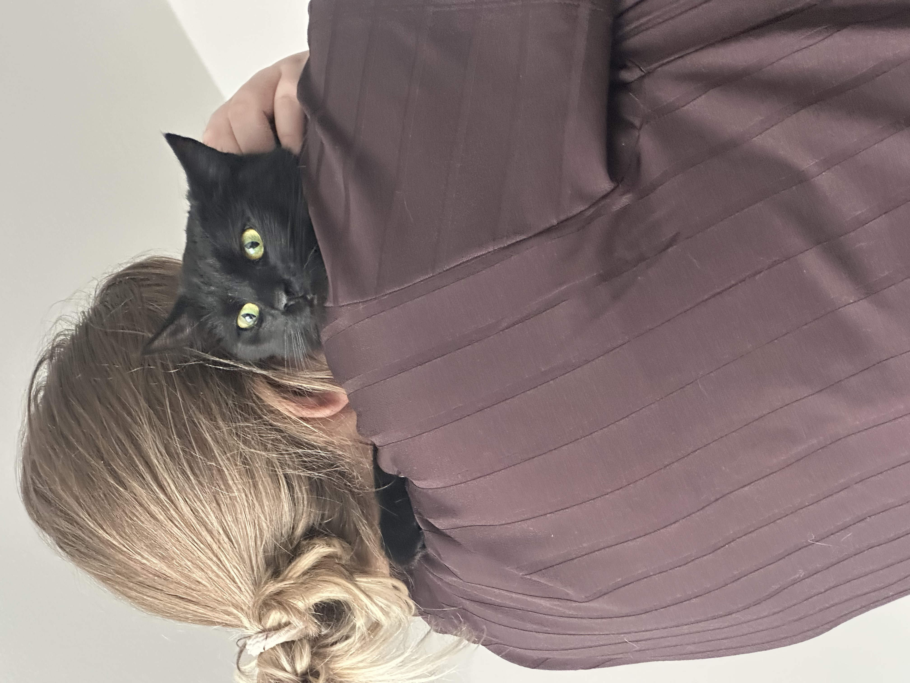
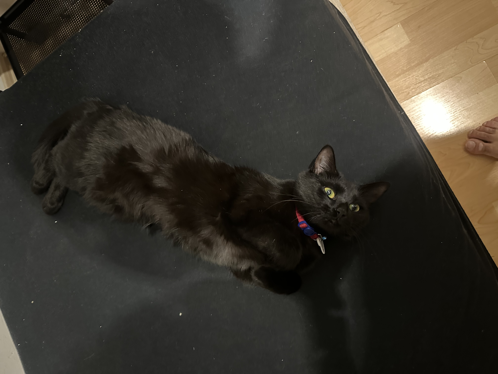
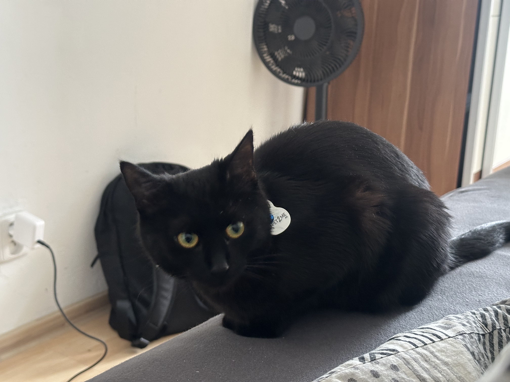
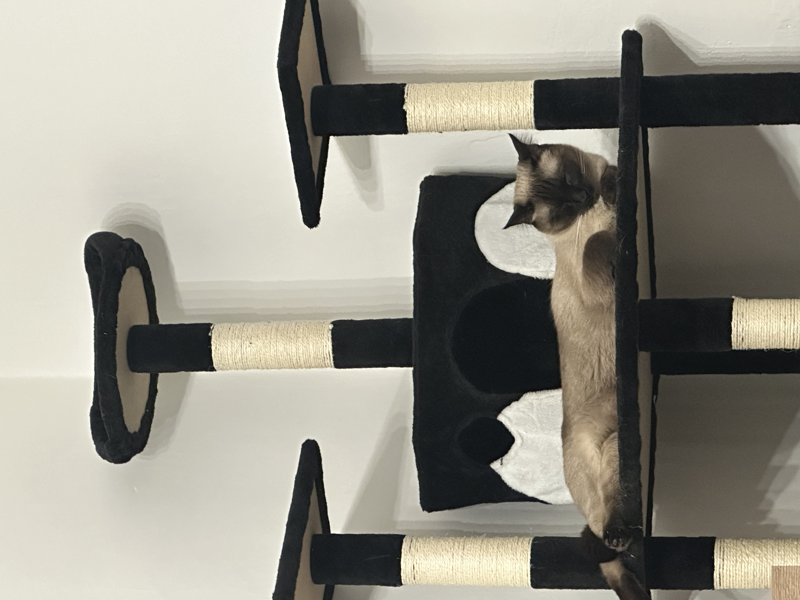
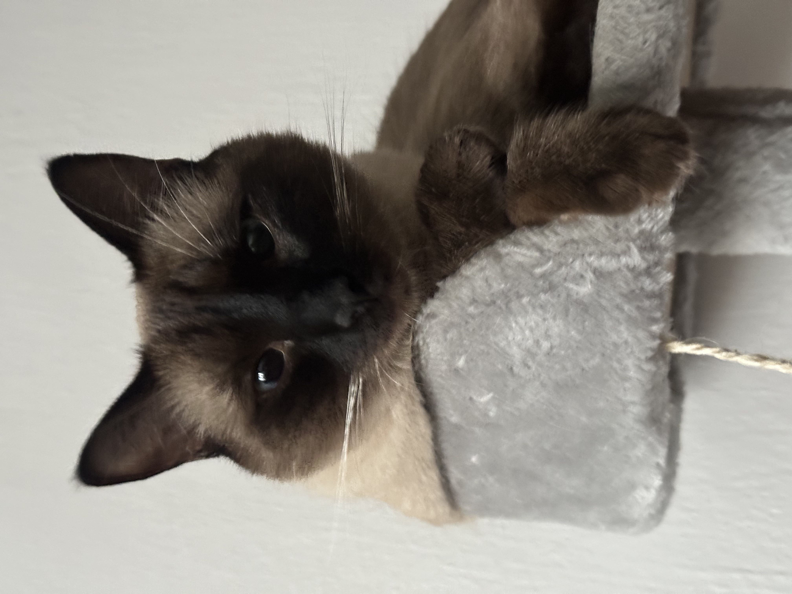
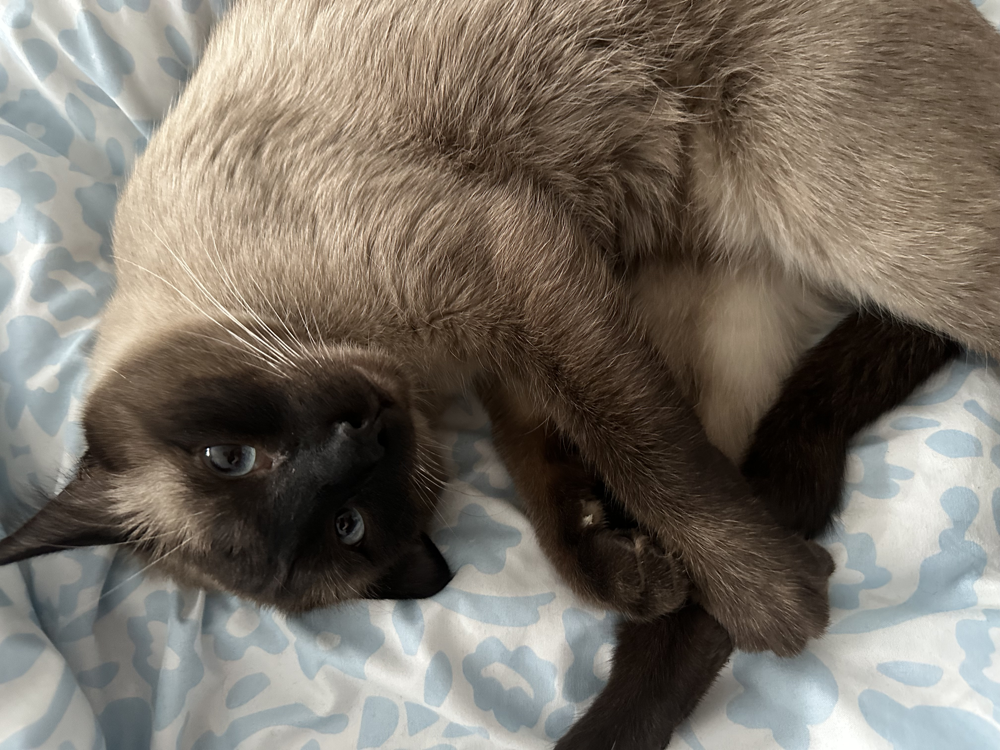

And many more to come ❤️
It all started with Tinder… and way too many canceled dates.
Honestly?
Neither of us even felt like going to that first one.
But somehow, we both still showed up at a cat café.
And that one decision changed everything.
What was supposed to be just another date turned into more dates.
Then more time together.
Then me finding excuses to visit you at work just to see you for a little while, or to just bring you vape liquid (I had to lie about me being in the office so you wouldn't feel bad about me coming from Poruba).
We didn’t have a title yet.
But we already had something real:
We just genuinely enjoyed being around each other.
No pressure.
No expectations.
Just two people slowly realizing they liked this… a lot.
It was then on that day, 20.05.25 and on that place of shisha while we were studying, that we began to have an official title.
Our first trip, though we just went to Biedronka a park and back.
I remember you took your mom's car and just drove us to buy your Polish sauce. I was just going along cause it sounded interesting.
We were just chilling, and it was a nice memory.
We booked that wellness hotel for our weekend getaway.
I remember those domino's we got and since then we loved that fucking bread. We also fucked a lot, which even almost geopardised our amazing visit to the pool which I was exited about for some reason lol.
It was a nice refresher of our busy week.
It was our first concert together! (not counting Beats for Love)
I enjoyed it a lot. I had the best hambuger I have ever had to this day, and we also went to that Italian restaurant where I found out that you vaping in silent was hot.
Of course, not to mention the I Prevail concert, which I fucking enjoyed a lot not only because of the band and music, but because you were there with me.
I was scared as fuck.
I remember we were supposed to go after our wellness trip from Poland, but we couldn't cause of wheater. Part of me was sad, and some part was relieved.
We ended up going with your sister and well, you know how that ended. Me screaming a lot and you getting some of the worse pictures of me.
But at the end I got used to the adrenaline and was riding everything without a second thought. And I began loving all rollercoasters since then.
Our christmasy trip!
Not counting the shitty af bed we had...
I loved it, yeah I had a little mental breakdown with how crowded that christmas market was, but hey, who doesn't. I felt like in India there
We got considerably drunk on that shot bar, that we even returned fucking walking to the aribnb... Like wtf we would not be doing that sober.
I also remember that you called me nigga for the first time... Thats was special and I felt love from that sweet word coming out of your mouth
And of course... The fucking plushie machine. I got traumas from that, but I got you your plushie in the end so everything is good :D
You meeting my family for the first time... Yeah I know it was stressful
But they loved you in the end, and you loved them as well even with all the weird shit they got.
We walked around, even though you wanted to kill me for not showing you better places. But then my cousin saved my ass (I wanted to build her a statue during that walk she gave us)
And we also watched some fireworks... Kinda. But we definitely heard them
You also cooked, and they cooked for you, and you enjoyed that pan de jamon
But overall, you met them and they met you. And we had a good time.
Well, this is our last trip so far. What to say about it?
It involved a lot of walking for sure, and sometimes us fighting for some time alone.
But we enjoyed it too, you ate the proper Venezuelan food, and even got wet from hearing me speak. Thats a total win in my book.
I remember I wanted to kill your dad for the first time for barely showing up to the concert. It had you sad and I was trying to talk to you to look at the positive side. Thanks god he came in the end cause I wasn't sure for how long the talking was going to work...
We also met some randoms, got a place where to stay in Tenerife (still depends on how drunk that guy was), and a nice visit to the planetarium... I am sure you got some good memories from there... (pls dont kill me)
Overall, a lot of walking. And a lot of alcohol at the end. And I also had another crashout for not getting you a plushie again lol
Got cancelled... But it was a sweet thought
You still wear them to this day! Nothing could make me happier!
You were always sad you lost them, and I was happy cause I get to buy you a new one hahaha.
I am NOT writing one section for each of those... But fuck, I felt like it was a competition of gifts between us haha. They were all lovely, especially that shirt you made
I remember you spent hours and hours making that shirt.
I never doubted my Brazilean monkey!
Well fuck... Gotta include you calling me a nigga and monkey progressively. I knew you had that little fun racist white deep inside somehwere ;) (it is a joke)
Us in Energylandia screaming from the rollercoasters... You actually thought it was your last time in earth before the red one. Maybe this should be in the section of scary lol
You really called me a fucking Stork when I walk... Like there are so many cool birds but you decided on one of the lamest one... Hey when I was a kid they said it was like a pidgeon, so I guess is an improvement
Meeting your parents... Fuck I swear I was scared af of that, and you were too.
But in my head I was "These white Czech family will really be okay with their sweet daughter who they love, to be banged by some latino Venezuelan monkey who can barely communicate with them? I am so dead..."
That was pretty much the summary in what was going on inside my head. I am so surprised it turned out so good, even with the language and culture barrier.
Then you meeting my family... I was teaching you how to greet my grandma at the same time as I taught you dirty stuff in Spanish... I was genuinely scared you were going to mix them up
I had so many calls with my cousin, sending her as messenger to my grandma to let you visit them in christmas. And her fucking change of mind last minute was so crazy...
I still remember also the traveling. You getting almost lost in Madrid with trains, and me getting denied to fly on these planes. But hey, the money compensation was pretty sweet
I think it was our only trip where we returned with more money than we came...
I swear to god... When you told me you though you were pregnant I wanted to fucking die. I remember I then went to Lidl and was so fucking scared of that shit... Like helllll naaaah, I can barely take care of myself?? What will everyone say? How much is even a fucking abortion? This has never happened to me...
Thankfuly, all of those were what ifs and no reality. But shit, I remember I was considering cutting my balls or something like that...
The smallest members of our little family.







Even though there were some tiktoks in the past about it, I will list them here as well for you:
-Your height
-Your smile
-Your hair
-Your boobs
-Your ass
-Your determination
-You are caring, even when is hard
-You are there for me when I need you
-Your selflesness
-Your cooking
-Your plannings
-Your dark side of humour
-Your directness
-You vaping
-Your taste in music
-Just you in general...
I hope you like this present
I wanted to make something with no cost, cause you would feel bad I spent money. Not physical impractical, cause you got plenty. And Something special and not generic.
Thats why I decided to make this page, for our moments together and a small re-cap of what has happened so far. It took me a while to think of the idea and some time to make it
I really hope that you like it, as much as I liked making it for you.
And this is just the beginning.
Days
Hours
Minutes
Seconds